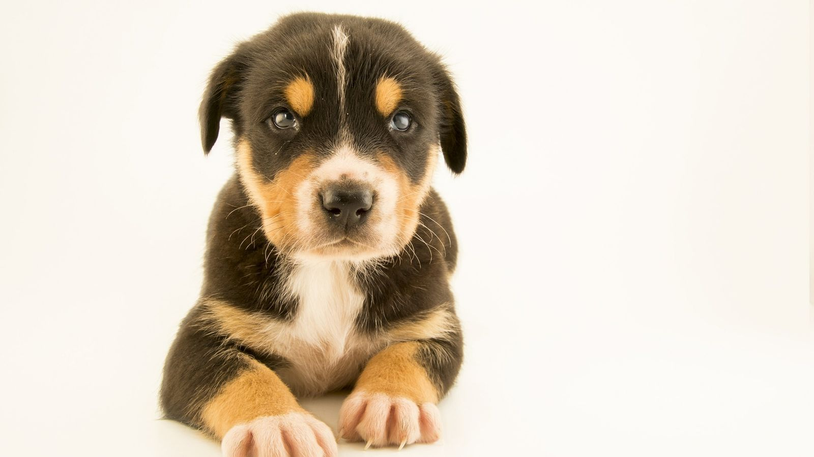

O cão (nome científico: Canis lupus familiaris), no Brasil também chamado de cachorro, é um mamífero carnívoro da família dos canídeos, subespécie do lobo, e talvez o mais antigo animal domesticado pelo ser humano.
Teorias postulam que surgiu do lobo cinzento no continente asiático há mais de 100 000 anos. Ao longo dos séculos, através da domesticação, o ser humano realizou uma seleção artificial dos cães por suas aptidões, características físicas ou tipos de comportamento.
